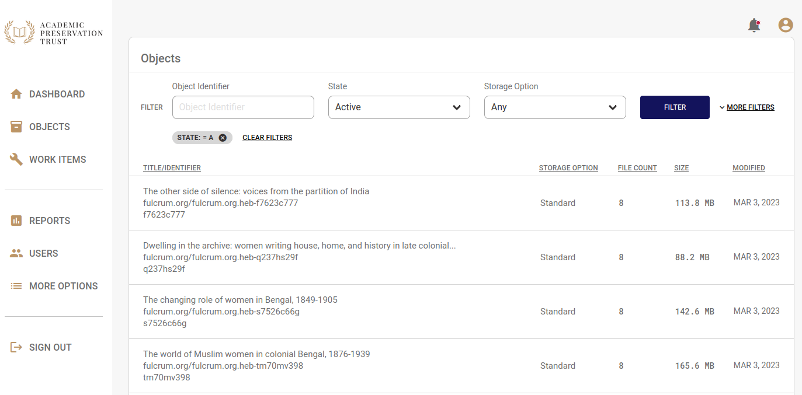
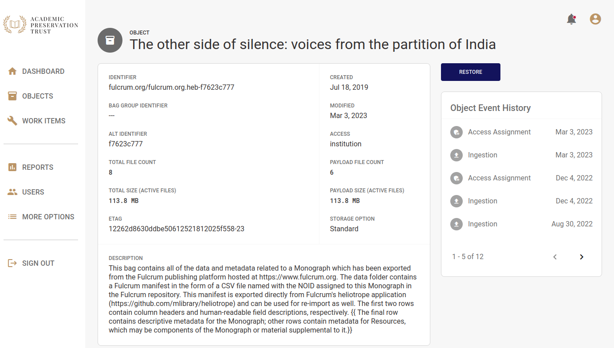
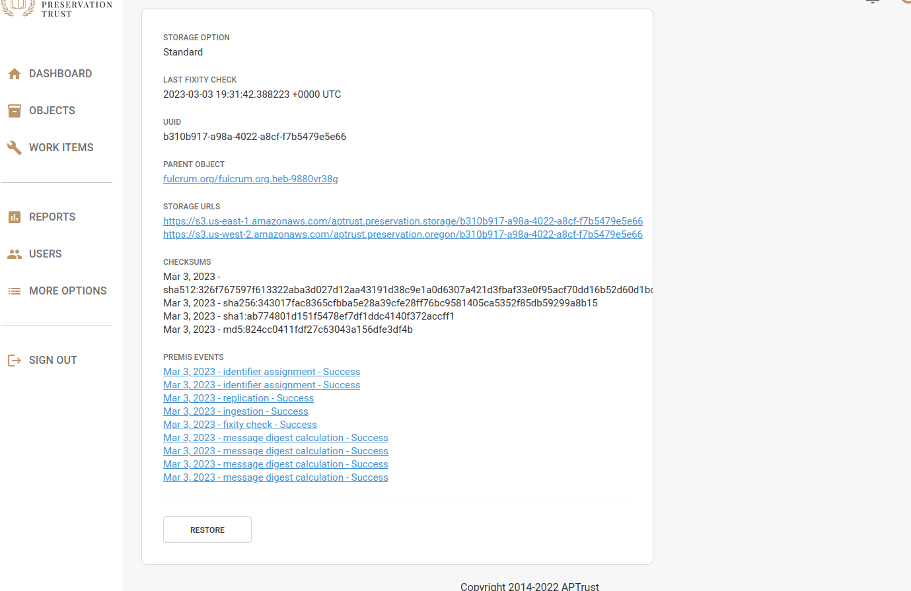
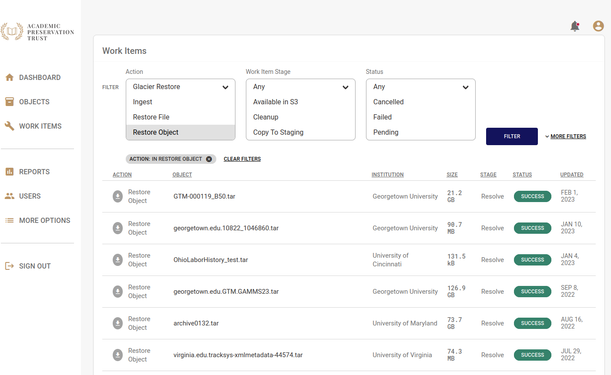

Restoration
Restoring Intellectual Objects
You can restore an intellectual object by navigating to the object detail page and clicking the Restore button.
You can find an object by going to the Object List page, clicking More Filters, and typing its identifier into the identifier search field.

When you reach the object detail page, click the blue Restore button in the upper right corner of the page.

After you click Restore Object, APTrust does the following:
-
Creates a work item describing what is to be restored.
-
Copies all of the object's files into a new bag, verifying each file's checksums in the process.
-
Copies the latest version of the aptrust-info.txt and bag-info.txt files into the bag.
-
Writes a JSON file into the bag containing all of the PREMIS events APTrust recorded for that bag and its contents.
-
Adds md5 and sha256 manifests and tag manifests to the bag.
-
Copies the bag to your restoration bucket at
aptrust.restore.<your.domain>in our production repo, oraptrust.restore.test.<your.domain>in our demo repo. -
Marks the work item as complete.
Notes on Restored Bags
Because we rebuild bags for restoration, the bag you get back will not exactly match the bag you deposited, though we do guarantee that it contains all of the latest versions of all of the payload files.
If you submitted a bag that was packaged according to the BTR BagIt Profile, it will restored in BTR format. All other bags will be restored in APTrust format.
Note that, in addition to payload files, we preserve and restore the following tag files:
- aptrust-info.txt
- bag-info.txt (Which will be modified on restoration. See below.)
- Any other file outside the original bag's data directory that is not a manifest, tag manifest or fetch.txt file.
We preserve the files above because they often contain important metadata.
Restored bags tend to differ in the following ways from your originally submitted bags:
-
Restored APTrust bags have both sha256 and md5 manifests, while the bag you originally deposited typically has only one or the other.
-
Restored APTrust bags include md5 and sha256 tag manifests while bags submitted for ingest typically have neither.
-
Restored BTR bags include sha1, sha256, and sha512 manifests and tag manifests, even if the original bag included only one of these.
-
Restored bags include a modified bag-info.txt file. The modified file will include all of the tags and values included in the last ingested version of the bag, but:
- The bag will have a new Payload-Oxum.
- The original Payload-Oxum will be included as Original-Payload-Oxum.
- The bag will have a new Bagging-Date describing when APTrust's bag restorer rebuilt the bag.
- The original Bagging-Date will be included as Original-Bagging-Date.
- The bag will have a new Bag-Size describing the size of the restored bag.
- The original Bag-Size will be included as Original-Bag-Size.
- The bag will have a new Bagging-Software value saying that the bag was created by the APTrust restorer.
- The original Bagging-Software name will included as Original-Bagging-Software.
-
Restored bags include the latest version of each preserved file in the payload (data) directory.
This last point is important. In some cases, you or someone at your institution may have deleted files from a bag, or uploaded newer versions of files in a bag after the bag was initially ingested. Deleted files cannot be restored, and the restored bag will always contain the last uploaded version of each file.
You can find information about updated and deleted files in the APTrust registry.
- Go to https://repo.aptrust.org/objects
- Search for the object you want to investigate. The easiest way to find an object is by its identifier.
- Scroll down the object detail page to the list of Active Files.
- Click the plus sign next to a file record to see its checksum history. If a newer version of a file was uploaded after initial ingest, this view will show you the old and new checksums, and the dates on which the checksum changed. You'll find more info, including a full list of Premis events, on the file detail page. Go to https://repo.aptrust.org/files and enter paste in the file identifier.
- To see a list of files deleted from the current object, click the show deleted files link on the top right side of the Active Files list.
Because files may have been added to or deleted from a bag after its initial ingest, the Bag-Size and Payload-Oxum of the restored bag may differ from the Bag-Size and Payload-Oxum of any individual ingests. This is why we include both the current and original values in the restored version.
If you're curious about why the contents of a restored bag differ from the original, the object's PREMIS events should provide a detailed record of all additions and deletions. See PREMIS Events for more info.
Restoring Individual Files
You can restore individual files from the Intellectual Object page or from the Generic File Detail page. To restore from the Intellectual Object page:
- Locate the file you want to restore. If you don't see it in the list of files below the donut charts, you can search for it by identifier or you can click one of the arrows below the list to load another page of file results.
- Click the plus sign next to the file you want to restore. This opens the file detail view.
- Scroll down to the end of the shaded file detail view and click the Restore File button.

You can also restore files from the file detail page. To do so:
- Click More Options in the left nav.
- Click Files.
- Enter the file identifier in the search box and click Filter.
- Click on the file you want to restore. This will open the file detail view.
- Scroll to the bottom of the page and click Restore.

APTrust performs the following steps for file restoration:
-
Creates a work item with the restoration request.
-
Verifies the file's checksum.
-
Copies the file to your receiving bucket at
aptrust.restore.<your.domain>in our production repo, oraptrust.restore.test.<your.domain>in our demo repo. -
Marks the work item as complete.
Restoration Timeline
Restoring an item usually takes anywhere from 10 minutes to 24 hours, depending on the size of the object, where it is stored, and the number of work items the system has to process before it gets to yours.
-
When restoring items from S3, the restoration process can usually begin immediately, since the files are immediately accessible. For items using Standard storage (as opposed to Glacier-Only), APTrust always restores from S3.
-
Restoring from Glacier takes longer than restoring from S3.
- When restoring from Glacier-only storage, it takes 4-5 hours to move files to a place where APTrust can copy and validate them.
- When restoring from Glacier Deep Archive, it takes 12 hours to move files into a location where APTrust can copy and validate them.
-
The size of the items being restored determines how long it will take to restore them. For example, a 1 MB file can often be restored in under a minute. A 1 TB bag may take 24 hours or more. Most of restoration time is taken up by copying the files and validating their md5 and sha256 checksums.
-
You can calculate overall restoration time as:
- S3: A product of file size: A few minutes for a few megabytes, or several hours for objects and files over 100 GB.
- Glacier: 4-5 hours plus file size.
- Glacier Deep Archive: 12 hours plus file size.
Monitoring Restoration Progress
You can check the progress of your restoration requests in Registry' Work Items list or the Registry REST API.

When a restoration is complete, the file or bag will be waiting in your restoration bucket and APTrust will send an email to your institutional admins. The email includes information about the location of the restored file so you can download it.
Downloading Restored Items
You can use the apt_download command from our Partner Tools to download restored bags.
Restored items are automatically deleted from your restoration bucket after 14 days to avoid ongoing storage costs. (We do not delete the preservation copy, only the copy in your restoration bucket.)